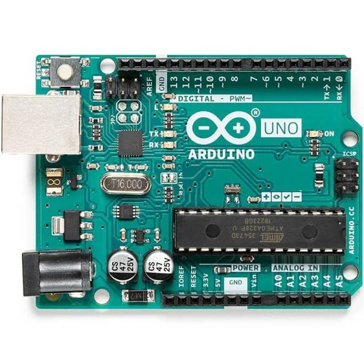

Els diferents microcontroladors tenen en comú els següents aspectes:
PWM significa modulació de l'ample de banda, en anglès Pule Width Modulation i es una forma d'aconseguir una sortida analògica a partir de diverses sortides digitals, molt ràpides.
PWM es representa amb el símbol "~" tal com podem veure a la imatge següent d'un Arduino Uno
Més amunt podem veure que els pins numero 3,5,6,9,10 i 11
Aquests PWM són sortides analògiques de 8 bits, en el cas de Arduino Uno Rev3, d'acord amb el abricant que l'anomena Converter
Tenir 8 o 12 bits en un convertidor digital analògic o DAC tippus PWM fa que tinguem 2 8o 2 10nivells diferents de corrent, es a dir 256 sinvells diferents o 2048 nivells diferents
Suposem que tant Arduino Uno Rev3 o Rev4 poden donder 5 volts com a màxim. Quina seria la resolució en milivolts de cada arduino?
5 volts entre 256 dona 0.01953125 volts= 19 milivolts per arduino Un Rev3
volts dividint ntre 2048 dona 0.00244140625 volts=2milivolts per arduino Uno Rev4